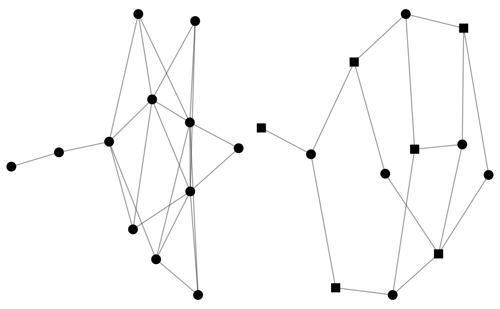
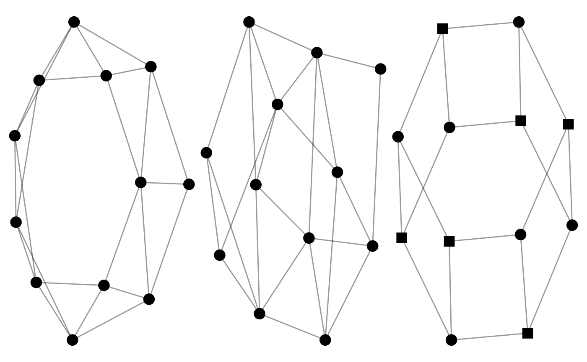
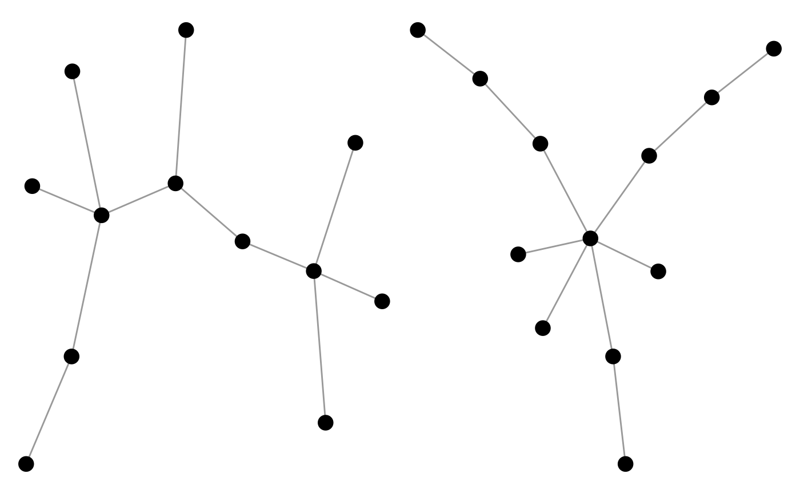
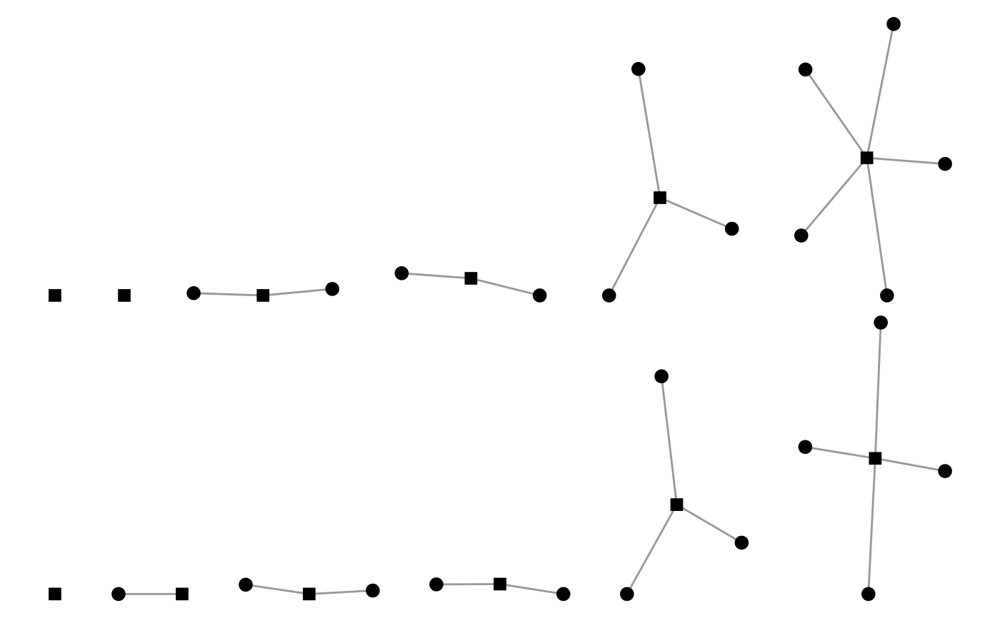
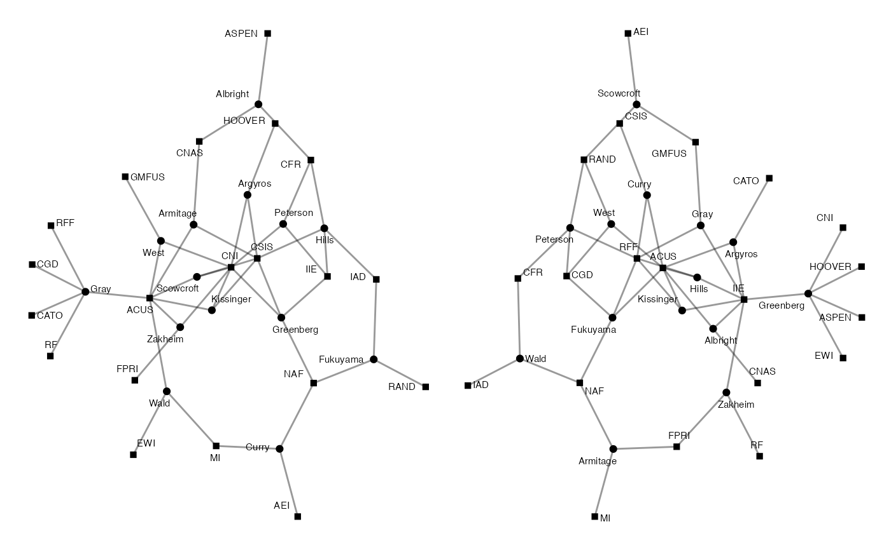

These functions are similar to the create_* functions,
but include some element of randomisation.
They are particularly useful for creating a distribution of networks
for exploring or testing network properties.
generate_random(n, p = 0.5, directed = FALSE, with_attr = TRUE)
generate_smallworld(n, p = 0.05, width = 2, directed = FALSE)
generate_scalefree(n, p = 1, directed = FALSE)
generate_permutation(object, with_attr = TRUE)Given:
A single integer, e.g. n = 10,
a one-mode network will be created.
A vector of two integers, e.g. n = c(5,10),
a two-mode network will be created.
A migraph-compatible object, a network of the same dimensions will be created.
Proportion of possible ties in the network that are realised or, if integer greater than 1, the number of ties in the network.
Whether to generate network as directed. By default FALSE.
Logical whether any attributes of the object should be retained. By default TRUE.
Integer specifying the width or breadth of the ring or branches.
An object of a migraph-consistent class:
matrix (adjacency or incidence) from {base} R
edgelist, a data frame from {base} R or tibble from {tibble}
igraph, from the {igraph} package
network, from the {network} package
tbl_graph, from the {tidygraph} package
By default an igraph object is returned,
but this can be coerced into other types of objects
using as_matrix(), as_tidygraph(), or as_network().
generate_random(): Generates a random network with a particular probability.
generate_smallworld(): Generates a small-world structure
following the lattice rewiring model.
generate_scalefree(): Generates a scale-free structure
following the preferential attachment model.
generate_permutation(): Generates a permutation of the original network
using a Fisher-Yates shuffle on both the rows and columns (for a one-mode network)
or on each of the rows and columns (for a two-mode network).
Erdős, Paul, and Alfréd Rényi. (1959). "On Random Graphs I" Publicationes Mathematicae. 6: 290–297.
Watts, Duncan J., and Steven H. Strogatz. 1998. “Collective Dynamics of ‘Small-World’ Networks.” Nature 393(6684):440–42. doi:10.1038/30918 .
Barabási, Albert-László, and Réka Albert. 1999. “Emergence of Scaling in Random Networks.” Science 286(5439):509–12. doi:10.1126/science.286.5439.509 .
autographr(generate_random(12, 0.4)) +
autographr(generate_random(c(6, 6), 0.4))

autographr(generate_smallworld(12, 0.025)) +
autographr(generate_smallworld(12, 0.25)) +
autographr(generate_smallworld(c(6,6), 0.025))

autographr(generate_scalefree(12, 0.25)) +
autographr(generate_scalefree(12, 1.25))

autographr(generate_scalefree(c(12,6), 0.25)) /
autographr(generate_scalefree(c(12,6), 1.25))

autographr(mpn_elite_usa_advice) +
autographr(generate_permutation(mpn_elite_usa_advice))
